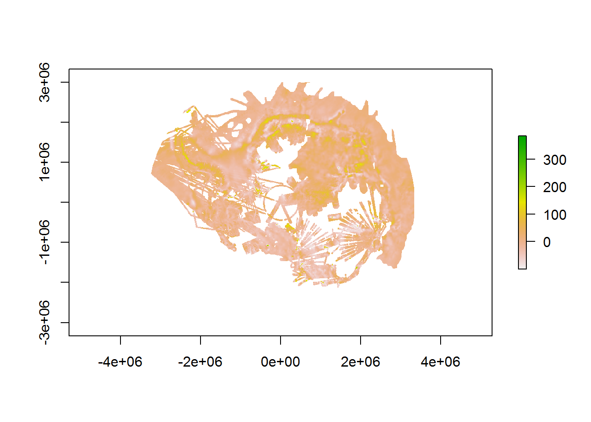

Introduction to quantarticR
Overview
The quantarcticR package provides access to Quantarctica data sets for R users, without needing QGIS to be installed.
This vignette:
- explains what Quantarctica data is
- shows how the datasets can be used in R
- provides examples of how you can work with them
What is Quantarctica?
Quantarctica is a collection of Antarctic geographical datasets which works with the free, cross-platform, open-source software QGIS. It includes community-contributed, peer-reviewed data from ten different scientific themes and a professionally-designed basemap.
Quantarctica is is published and made available under under a Creative Commons Attribution 4.0 International License.
If you use it, please cite it:
Matsuoka K, Skoglund A, Roth G (2018) Quantarctica dataset. Norwegian Polar Institute. https://doi.org/10.21334/npolar.2018.8516e961
In addition, published works produced using Quantarctica are asked to cite each dataset that was used in the work. Please consult the abstract of each data set for the relevant citation.
Caching datasets
The quantarcticR R package provides you with flexibility to either temporarily or persistently store the data that is downloaded from Quantarctica. By default a temporary directory is used, which will only persist for the current R session. This means that data will not be re-used from session to session, and you may end up re-downloading the same data if you run the same script in different sessions.
You can instead choose to save the data to a persistent directory, by issuing the command qa_cache_dir("persistent") after loading the quantarcticR package. This will use a standard user data directory (e.g. under the user’s AppData directory on Windows operating systems). You could also specify a particular directory to use, if you prefer:
qa_cache_dir("c:/my/data/directory/")You can switch cache directories at any time, and you can find out the current cache directory by calling qa_cache_dir() with no arguments.
Quantarctica Data Sets
Start by loading the package:
library(quantarcticR)In order to return a list of the datasets available, use the qa_datasets function.
datasets <- qa_datasets()
head(datasets)## layername
## 1 Overview place names
## 2 COMNAP listed facilities
## 3 Subantarctic stations
## 4 SCAR Composite gazetteer
## 5 IBO-IOC GEBCO Features (point)
## 6 IBO-IOC GEBCO Features (multipoint)
## main_file
## 1 c:/data/Quantarctica3/Miscellaneous/OverviewPlaceNames/OverviewPlaceNames.shp
## 2 c:/data/Quantarctica3/Miscellaneous/Stations/COMNAP_Antarctic_Facilities.shp
## 3 c:/data/Quantarctica3/Miscellaneous/Stations/Sub-antarctic_Stations.shp
## 4 c:/data/Quantarctica3/Miscellaneous/SCAR_CompositeGazetteer/SCAR_CompositeGazetteer.shp
## 5 c:/data/Quantarctica3/Miscellaneous/IHO-IOC_GEBCO_UnderseaFeatureNames/GEBCO_point.shp
## 6 c:/data/Quantarctica3/Miscellaneous/IHO-IOC_GEBCO_UnderseaFeatureNames/GEBCO_multipoint.shp
## type cached download_size
## 1 shapefile TRUE 19.74K
## 2 shapefile TRUE 691.92K
## 3 shapefile TRUE 691.92K
## 4 shapefile TRUE 329.05M
## 5 shapefile TRUE 1.25M
## 6 shapefile TRUE 1.25MIn the datasets object we can see the following:
-
layernamewhich is the name of the dataset -
main_fileis the primary data file associated with each dataset -
typewhich is the object type (currently “shapefile” or “raster”) -
cachedwhether it has been downloaded to the local cache or not -
download_sizewhich is the size of the dataset.
Dataset details
In order to view the details of a dataset use the qa_dataset function. This function gives more information about the dataset (but does not download or return the actual data). For example, with the simple basemap called “ADD Simple basemap”:
dataset <- qa_dataset("ADD Simple basemap")
dataset## # A tibble: 1 x 9
## layername datasource layer_attributes srs_attributes provider abstract
## <chr> <chr> <list> <list> <chr> <chr>
## 1 ADD Simp~ Miscellan~ <NULL> <tibble [1 x ~ ogr Quantar~
## # ... with 18 more variables: extent <list>, main_file <chr>,
## # bb_source$id <chr>, $name <chr>, $description <chr>, $doc_url <chr>,
## # $source_url <list>, $citation <chr>, $license <chr>, $comment <chr>,
## # $method <list>, $postprocess <list>, $authentication_note <chr>,
## # $user <chr>, $password <chr>, $access_function <chr>,
## # $data_group <chr>, $collection_size <lgl>…. TODO: a print method for the qa_dataset object ….
Fetch a dataset
To actually fetch the data, use the qa_get function. You can provide it with either the name of the dataset (i.e. layername as returned by qa_datasets()) or the dataset object (as returned by qa_dataset()).
Here we’ll fetch a dataset called “AntGG Free-air gravity anomaly (10km)”.
gravity_anomaly <- qa_get("AntGG Free-air gravity anomaly (10km)", verbose = TRUE)##
## Fri Jul 05 02:55:55 2019
## Synchronizing dataset: AntGG Free-air gravity anomaly (10km)
## Source URL http://quantarctica.tpac.org.au/Quantarctica3/Geophysics/ANTGG/
## --------------------------------------------------------------------------------------------
##
## this dataset path is: c:\data\Quantarctica3/Geophysics//ANTGG
## visiting http://quantarctica.tpac.org.au/Quantarctica3/Geophysics/ANTGG/ ... 7 download links, 0 links to visit done.
## file already exists, not downloading: http://quantarctica.tpac.org.au/Quantarctica3/Geophysics/ANTGG/ANTGG.txt ... file already exists, not downloading: http://quantarctica.tpac.org.au/Quantarctica3/Geophysics/ANTGG/ANTGG_Accuracy_10km.tif ... file already exists, not downloading: http://quantarctica.tpac.org.au/Quantarctica3/Geophysics/ANTGG/ANTGG_Accuracy_10km.tif.aux.xml ... file already exists, not downloading: http://quantarctica.tpac.org.au/Quantarctica3/Geophysics/ANTGG/ANTGG_BouguerAnomaly_10km.tif ... file already exists, not downloading: http://quantarctica.tpac.org.au/Quantarctica3/Geophysics/ANTGG/ANTGG_BouguerAnomaly_10km.tif.aux.xml ... file already exists, not downloading: http://quantarctica.tpac.org.au/Quantarctica3/Geophysics/ANTGG/ANTGG_FreeAirGravityAnomaly_10km.tif ... file already exists, not downloading: http://quantarctica.tpac.org.au/Quantarctica3/Geophysics/ANTGG/ANTGG_FreeAirGravityAnomaly_10km.tif.aux.xml ...
## Fri Jul 05 02:55:55 2019 dataset synchronization complete: AntGG Free-air gravity anomaly (10km)class(gravity_anomaly)## [1] "RasterLayer"
## attr(,"package")
## [1] "raster"Raster Plot
The gravity anomaly data set is a raster, so we can use the raster package to plot it.
library(raster)
plot(gravity_anomaly)
Using datasets with sf
Read in the simple basemap “ADD Simple basemap” data as an sf object and use the ggplot2 and sf packages to create a plot.
library(sf)
library(ggplot2)
surface_sf <- qa_get("ADD Simple basemap", shapefile_reader = sf::st_read)## Reading layer `ADD_DerivedLowresBasemap' from data source `c:\data\Quantarctica3\Miscellaneous\SimpleBasemap\ADD_DerivedLowresBasemap.shp' using driver `ESRI Shapefile'
## Simple feature collection with 1338 features and 1 field
## geometry type: MULTIPOLYGON
## dimension: XY
## bbox: xmin: -5791904 ymin: -5791904 xmax: 5791904 ymax: 5791904
## epsg (SRID): 3031
## proj4string: +proj=stere +lat_0=-90 +lat_ts=-71 +lon_0=0 +k=1 +x_0=0 +y_0=0 +datum=WGS84 +units=m +no_defsclass(surface_sf)## [1] "sf" "data.frame"ggplot(surface_sf) + geom_sf()